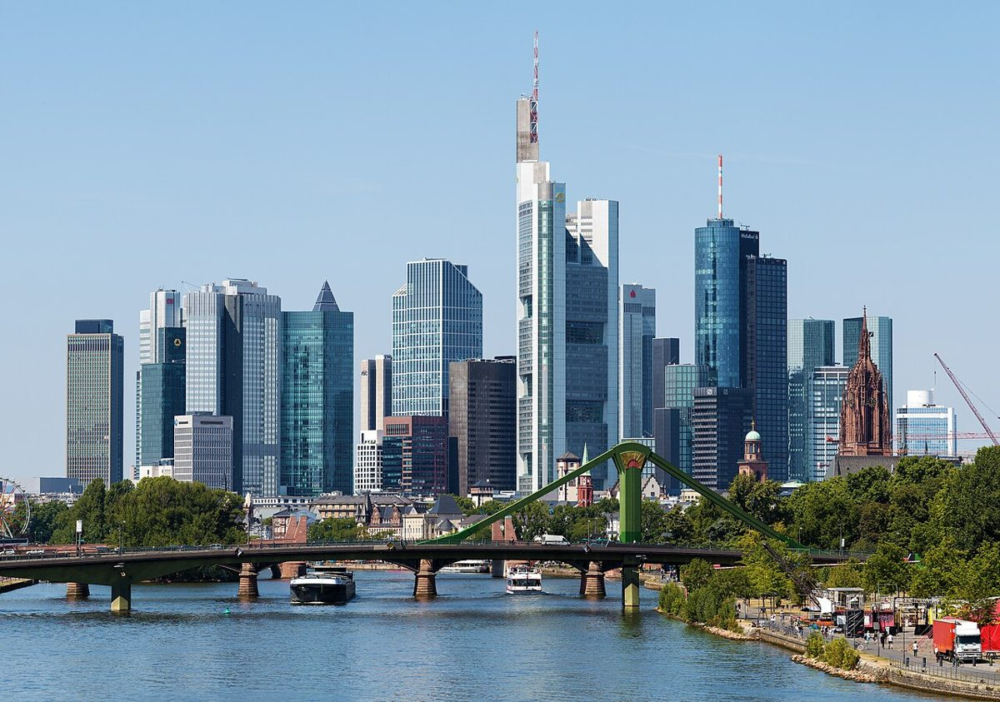

Die Frankfurter Skyline: Deutschlands Manhattan am Main

Die Frankfurter Skyline ist ein beeindruckendes Wahrzeichen Deutschlands und wird oft als das 'Manhattan am Main' bezeichnet. Mit ihren imposanten Wolkenkratzern und modernen Gebäuden bietet sie ein einzigartiges Stadtbild, das Besucher aus aller Welt anzieht. In diesem Artikel erfährst du alles über die besten Highlights, die beste Reisezeit, Anreise-Tipps und kulinarische Empfehlungen für deinen Besuch in Frankfurt.
Anreise nach Frankfurt
Frankfurt ist eines der wichtigsten Verkehrsknotenpunkte in Europa und daher hervorragend mit verschiedenen Verkehrsmitteln erreichbar. Der Flughafen Frankfurt ist einer der größten Flughäfen Europas und bietet zahlreiche nationale und internationale Verbindungen. Mit dem Zug ist Frankfurt über den Hauptbahnhof, der zu den größten Bahnhöfen Deutschlands gehört, gut zu erreichen. Darüber hinaus ist die Stadt über ein dichtes Autobahnnetz angebunden und verfügt über ein hervorragendes öffentliches Verkehrssystem, bestehend aus U-Bahnen, Straßenbahnen und Bussen.
Beste Reisezeit
Frankfurt bietet ganzjährig attraktive Besuchsmöglichkeiten, aber die beste Reisezeit ist von Mai bis September. In diesen Monaten ist das Wetter meist mild und sonnig, was perfekt für Stadtrundgänge und Besichtigungen der Skyline ist. Im Sommer finden außerdem viele Freiluftveranstaltungen und Festivals statt. Der Herbst ist ebenfalls eine gute Reisezeit, besonders für diejenigen, die die Region während der Wein- und Apfelsaison erkunden möchten. Der Winter hat seinen eigenen Charme, insbesondere durch die stimmungsvollen Weihnachtsmärkte, die die Stadt in ein festliches Licht tauchen.
Highlights der Frankfurter Skyline
1. Main Tower: Der Main Tower ist einer der bekanntesten Wolkenkratzer Frankfurts und bietet eine spektakuläre Aussichtsplattform, von der aus man einen atemberaubenden Blick über die gesamte Stadt und den Main hat. Der Aufstieg lohnt sich besonders bei klarem Wetter, wenn man sogar bis zum Taunus sehen kann.
2. Eiserner Steg: Diese Fußgängerbrücke über den Main bietet einen wunderschönen Blick auf die Skyline und ist besonders bei Sonnenuntergang ein beliebter Ort für Fotografen. Die Brücke verbindet die Altstadt mit dem Stadtteil Sachsenhausen und ist ein idealer Startpunkt für einen Spaziergang entlang des Mains.
3. Bankenviertel: Das Bankenviertel ist das Herz der Frankfurter Finanzwelt und beherbergt einige der höchsten Wolkenkratzer der Stadt. Ein Spaziergang durch dieses Viertel vermittelt das Gefühl, mitten in einer pulsierenden Metropole zu sein, geprägt von moderner Architektur und internationalem Flair.
4. Römer: Der Römer ist das historische Rathaus Frankfurts und ein wichtiges Wahrzeichen der Stadt. Obwohl es nicht zu den Wolkenkratzern gehört, ist es Teil der ikonischen Skyline und ein Muss für jeden Besucher.
5. Goethe-Turm: Dieser Aussichtsturm im Frankfurter Stadtwald bietet einen einzigartigen Blick auf die Skyline aus der Ferne. Er ist besonders bei Naturliebhabern beliebt und bietet eine angenehme Abwechselung zum geschäftigen Treiben der Innenstadt.
Kulinarische Empfehlungen
Frankfurt hat kulinarisch viel zu bieten, und hier sind einige lokale Spezialitäten, die du probieren solltest:
1. Grüne Soße: Eine traditionelle Frankfurter Spezialität, besteht aus sieben verschiedenen Kräutern und wird oft mit Eiern oder Kartoffeln serviert. Sie ist frisch und geschmackvoll und ein echter Klassiker der regionalen Küche.
2. Frankfurter Würstchen: Diese kleinen Würstchen sind weit über die Stadtgrenzen hinaus bekannt und werden traditionell mit Senf und Brot serviert. Sie sind ein Muss für jeden Besucher, der die lokale Küche kennenlernen möchte.
3. Apfelwein: Frankfurt ist auch bekannt für seinen Apfelwein, der in vielen traditionsreichen Apfelweinkneipen, den sogenannten 'Ebbelwoi-Wirtschaften', serviert wird. Ein Glas Apfelwein gehört einfach zu einem Frankfurter Besuch dazu.
Frankfurt bietet mit seiner beeindruckenden Skyline, den verschiedenen Highlights und seiner leckeren Küche ein unvergessliches Erlebnis für jeden Besucher. Ob du die Stadt auf eigene Faust erkundest oder an einer geführten Tour teilnimmst, es gibt viel zu entdecken und zu genießen.
Haiktec
- Clever sparen im Haushalt: 7 einfache Strategien für mehr finanziellen Spielraum
- YouTube-Kanal-Analyse und Content-Planer für Creator
- Effektive Unterrichtsplanung für Lehrer und Nachhilfelehrer: Praktische Strategien für mehr Zeit und bessere Ergebnisse
Text mit KI erstellt und automatisch geprueft.